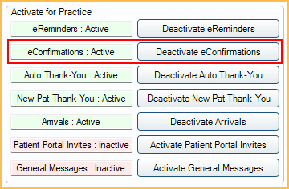

eConfirmations
eConfirmations are automated text messages about upcoming appointments that also allow the patient to confirm their appointment.
In eServices Setup, click Automated Messaging.

 See our video: Automated Messaging.
See our video: Automated Messaging.- eConfirmations is a paid service. For signup and pricing, see eServices Signup.
When sending eConfirmations, the practice can send a confirmation code (e.g., reply C to confirm) or have the patient click a URL to confirm.
Activate / Deactivate eConfirmations
eConfirmations can be activated or deactivated as needed.
- To enable eConfirmations, click Activate eConfirmations. The eConfirmation row displays in green with a status of Active.
- To disable eConfirmations, click Deactivate eConfirmations. The eConfirmations row displays in red with a status of Inactive.
After activating eConfirmations, set up eConfirmation Rules.
eConfirmation Rules
To edit an existing eConfirmation Rule, double-click a Confirmation Rule from the Automated Messaging Rules grid. To add a new rule, click Add eConfirmation.
For information on adding and editing rules, see Edit Rule.
eConfirmation Exclusions
To exclude eConfirmations from being sent on certain days of the week (e.g., weekends), or certain days (e.g., holidays), set the eConfirmation Exclusion Days.
Troubleshooting
Troubleshooting resources:
What happens when a patient clicks the eConfirmation URL and selects Request Callback?
The appointment status changes to the status selected for Not Accepted and an Alert in Open Dental notifies staff (those subscribed to the Patient Requested Callback alert).
How can I prevent an eConfirmation being sent for a specific appointment?
See Automated Messaging Advanced Settings to determine which appointment statuses allow eConfirmations.
How can I prevent an eConfirmation being sent for a specific patient?
Set the Exclude Automated Msgs setting in the Edit Patient Information. If text or email is selected, the patient will not receive eReminders or eConfirmations via the selected method. Select both to exclude all.
What happens if a patient has multiple appointments on the same day?
When a patient has multiple appointments on the same day, only one eConfirmation is sent for the patient's first appointment of the day. If a patient then replies to the confirmation, the eConfirmation marks all appointments on that day as confirmed.
My patient did not receive their eConfirmation, why would that be?
- The automated eServices schedule also affects send time. See eServices Setup Miscellaneous Tab. If a confirmation is scheduled to be sent before the automated start time set on the eServices Setup Miscellaneous tab, the Do not send value is ignored.
- Patients cannot be sent more than one eConfirmation text in the same day.
- Text Msg OK, assume default is 'No' for patients with no selection is enabled in Preferences and the patient has no Text OK status selected. If this is checked, patients without a Text OK are not sent text messages. Disable this preference to allow text to send to all patients with no Text OK status or change the individual patient's Text OK status to Yes in Edit Patient Information.
- The patient does not have a Wireless Phone number or Email address in the appropriate fields in Patient Information. Note: For Pediatric offices where younger patients might not have Wireless Numbers, Email Addresses, or be of an age to confirm appointments, you will need to mark same for family when adding Wireless Phone and Email Address to the guarantor of the family. Currently dependents do not automatically use their parents' contact information if the dependents' information is blank.
What happens if I have multiple eConfirmation rules and schedule an appointment inside the rule time frame?
When a new appointment is created and the send time for some rules have already passed, the rule closest to the appointment date/time will be used.
- Example: There are two rules: 7 day and 3 day. A new appointment is created 2 days from now. The 3 day rule will be used for the appointment since it is closest.
Why did my patient receive a message stating, "Confirmation Failed - Please contact your provider to confirm this appointment." or "This appointment is no longer at this date and time." when trying to confirm their appointment?
- Your patient had an appointment that was rescheduled to a different date or time and a new eConfirmation text was not sent.
- When rescheduling an appointment, users will be prompted to send a new eConfirmation. If the office chose not to send a new eConfirmation, when the patient replies to the eConfirmation text, the appointment they are attempting to confirm no longer exists at the date and time they're attempting to confirm, so they receive an error in response.
- If office staff opts to re-send the eConfirmation with the updated appointment details, the patient will be able to confirm the appointment without an error.
- If an appointment was rescheduled to a different operatory, but remains at the same date and time, the eConfirmation does not need to be re-sent. The patient should be able to confirm using the original message.
- The appointment the eConfirmation text was sent for has been broken. The patient will be unable to confirm a broken appointment.
Is it possible to send eConfirmations manually instead of having them sent out automatically?
Yes, to send eConfirmations manually instead of automatically, do the following:
- In Definitions: Appt Confirmed, create a new confirmation status named ReadyForSend.
- In Automated Messaging Advanced Settings, under the Send eConfirmation column, uncheck the X for each status except the status ReadyForSend.
When you are ready to send an eConfirmation to a patient, change the appointment status to ReadyForSend. This ensures eConfirmations are only sent for an appointment if the status has been specifically changed.
The eConfirmation is sent using the eConfirmation Rule Send Time. To send the eConfirmation immediately upon changing the appointment status, set the send time to 180 days.